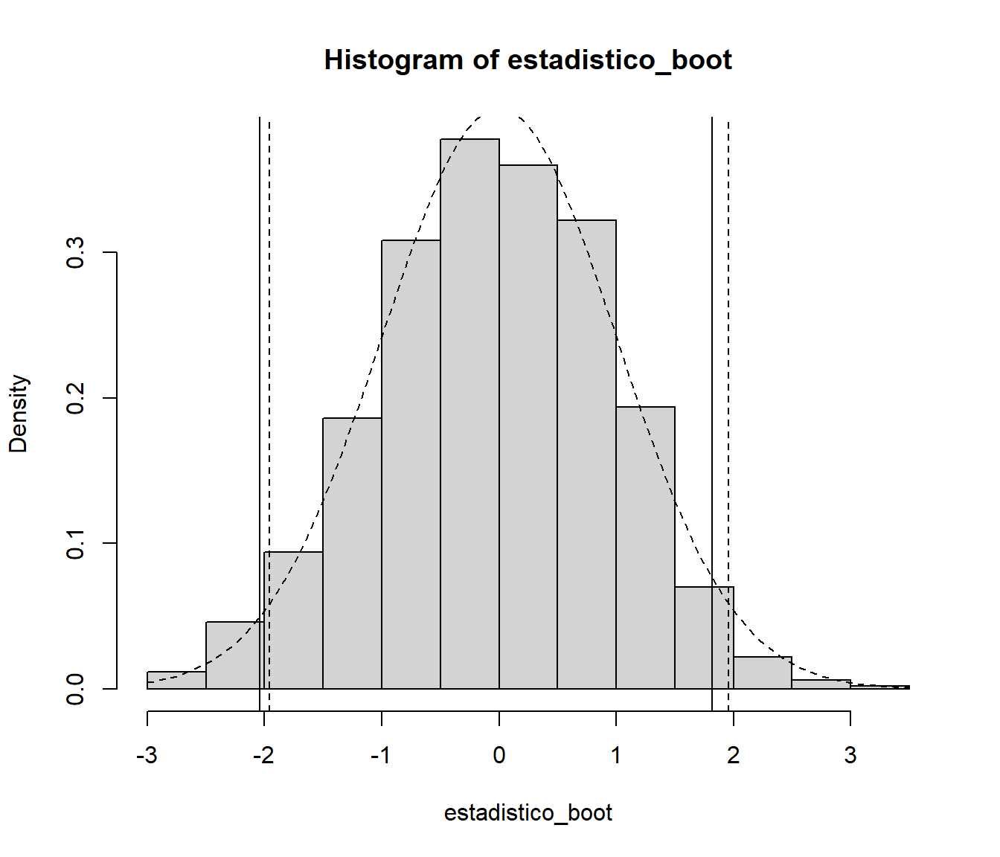

3.1 Bootstrap paramétrico
Supongamos que sabemos que la función de distribución poblacional pertenece a cierta familia paramétrica. Es decir \(F=F_{\theta }\) para algún vector \(d\)-dimensional \(\theta \in \Theta\). En ese caso parece lógico estimar \(\theta\) a partir de la muestra (denotemos \(\hat{\theta}\) un estimador de \(\theta\), por ejemplo el de máxima verosimilitud) y obtener remuestras de \(F_{\hat{\theta}}\) no de \(F_n\). Entonces, el bootstrap uniforme se modifica de la siguiente forma, dando lugar al llamado bootstrap paramétrico:
Dada la muestra \(\mathbf{X}=\left( X_1,\ldots ,X_n \right)\), calcular \(\hat{\theta}\)
Para cada \(i=1,\ldots ,n\) arrojar \(X_i^{\ast}\) a partir de \(F_{\hat{\theta}}\)
Obtener \(\mathbf{X}^{\ast}=\left( X_1^{\ast},\ldots ,X_n^{\ast} \right)\)
Calcular \(R^{\ast}=R\left( \mathbf{X}^{\ast},F_{\hat{\theta}} \right)\)
Así utilizaremos las distribución en el remuestreo de \(R^{\ast}\) para aproximar la distribución en el muestreo de \(R\). Lógicamente, cuando no sea posible obtener una expresión explícita para la distribución bootstrap de \(R^{\ast}\) utilizaremos una aproximación de Monte Carlo de la misma:
Dada la muestra \(\mathbf{X}=\left( X_1,\ldots ,X_n \right)\), calcular \(\hat{\theta}\)
Para cada \(i=1,\ldots ,n\) arrojar \(X_i^{\ast}\) a partir de \(F_{\hat{\theta}}\)
Obtener \(\mathbf{X}^{\ast}=\left( X_1^{\ast},\ldots ,X_n^{\ast} \right)\)
Calcular \(R^{\ast}=R\left( \mathbf{X}^{\ast},F_{\hat{\theta} } \right)\)
Repetir \(B\) veces los pasos 2-4 para obtener las réplicas bootstrap \(R^{\ast (1)}\), \(\ldots\), \(R^{\ast (B)}\)
Utilizar esas réplicas bootstrap para aproximar la distribución en el muestreo de \(R\)
En general, para llevar a cabo el paso 2, debemos poder simular valores de la distribución \(F_{\hat{\theta}}\) (en el caso del bootstrap uniforme se trataba de simular valores de la distribución empírica, lo cual es muy sencillo y rápido). Para ello podemos utilizar el método de inversión, que consiste en simular un valor \(U\) procedente de una distribución \(\mathcal{U}\left( 0,1 \right)\) (es decir, \(U\) es un número aleatorio uniforme) y devolver \(X^{\ast}=F_{\hat{\theta}}^{-1}\left( U \right)\). Así, podríamos escribir el paso 2 de una forma más detallada:
- Para cada \(i=1,\ldots ,n\) arrojar \(U_i\sim \mathcal{U}\left( 0,1 \right)\) y hacer \(X_i^{\ast}=F_{\hat{\theta}}^{-1}\left( U_i \right)\)
No en todos los modelos paramétricos es fácil de calcular la inversa
\(F_{\hat{\theta}}^{-1}\). En algunos modelos paramétricos (como el caso
de la distribución normal) ni siquiera tenemos una fórmula explícita
para \(F_{\theta }\left( x \right)\), con lo cual difícilmente podremos
calcular explícitamente su inversa. En casos como esos es frecuente
recurrir a otros métodos para simular la distribución en cuestión.
Normalmente existen rutinas incorporadas a la mayoría de los lenguajes
de programación y software estadístico (como R) que permiten simular
directamente la mayoría de las distribuciones paramétricas habituales.
Continuando con el ejemplo de tiempo de vida de microorganismos, podemos modificar fácilmente el código mostrado en el Ejemplo 1.1, de forma que se emplee bootstrap paramétrico (normal), con desviación típica conocida, para calcular un intervalo de confianza para la media poblacional.
muestra <- c(0.143, 0.182, 0.256, 0.26, 0.27, 0.437, 0.509,
0.611, 0.712, 1.04, 1.09, 1.15, 1.46, 1.88, 2.08)
n <- length(muestra)
sigma <- 0.6
alfa <- 0.05
x_barra <- mean(muestra)
# Remuestreo
set.seed(1)
B <- 1000
estadistico_boot <- numeric(B)
for (k in 1:B) {
# u <- rnorm(n)
# remuestra <- u * sigma + x_barra
remuestra <- rnorm(n, x_barra, sigma)
x_barra_boot <- mean(remuestra)
estadistico_boot[k] <- sqrt(n) * (x_barra_boot - x_barra)/sigma
}
# Aproximación Monte Carlo de los ptos críticos
# Empleando la distribución empírica del estadístico bootstrap:
# estadistico_boot_ordenado <- sort(estadistico_boot)
# indice_inf <- floor(B * alfa/2)
# indice_sup <- floor(B * (1 - alfa/2))
# pto_crit <- estadistico_boot_ordenado[c(indice_inf, indice_sup)]
# Empleando la función `quantile`:
pto_crit <- quantile(estadistico_boot, c(alfa/2, 1 - alfa/2))
# Construcción del IC
ic_inf_boot <- x_barra - pto_crit[2] * sigma/sqrt(n)
ic_sup_boot <- x_barra - pto_crit[1] * sigma/sqrt(n)
IC_boot <- c(ic_inf_boot, ic_sup_boot)
names(IC_boot) <- paste0(100*c(alfa/2, 1-alfa/2), "%")
IC_boot## 2.5% 97.5%
## 0.5236922 1.1217871En este caso concreto la distribución bootstrap del estadístico sería conocida (normal estándar) y realmente no sería necesario emplear la aproximación Monte Carlo:
hist(estadistico_boot, freq = FALSE)
abline(v = pto_crit)
curve(dnorm, add=TRUE, lty = 2)
pto_crit_teor <- qnorm(1 - alfa/2)
abline(v = c(-pto_crit_teor, pto_crit_teor), lty = 2)
ic_inf_boot_teor <- x_barra - pto_crit_teor * sigma/sqrt(n)
ic_sup_boot_teor <- x_barra + pto_crit_teor * sigma/sqrt(n)
IC_boot_teor <- c(ic_inf_boot_teor, ic_sup_boot_teor)
names(IC_boot_teor) <- paste0(100*c(alfa/2, 1-alfa/2), "%")
IC_boot_teor## 2.5% 97.5%
## 0.501697 1.108970Para emplear el paquete boot, como se comentó en la Sección
1.4.1, habría que establecer en la llamada a la
función boot() los argumentos: sim = "parametric",
mle igual a los parámetros necesarios para la simulación y
ran.gen = function(data, mle), una función de los datos originales
y de los parámetros que devuelve los datos generados.
En este caso además, la función statistic no necesita el vector
de índices como segundo parámetro.
Por ejemplo, para calcular el intervalo de confianza para la media del
tiempo de vida de los microorganismos, podríamos utilizar el siguiente código:
library(boot)
ran.gen.norm <- function(data, mle) {
# Función para generar muestras aleatorias normales
# con desviación típica sigma = 0.6,
# mle contendrá la media de los datos originales
out <- rnorm(length(data), mle, sigma)
out
}
statistic <- function(data){
c(mean(data), sigma^2/length(data))
}
set.seed(1)
res.boot <- boot(muestra, statistic, R = B, sim = "parametric",
ran.gen = ran.gen.norm, mle = mean(muestra))
boot.ci(res.boot, type = "stud")## BOOTSTRAP CONFIDENCE INTERVAL CALCULATIONS
## Based on 1000 bootstrap replicates
##
## CALL :
## boot.ci(boot.out = res.boot, type = "stud")
##
## Intervals :
## Level Studentized
## 95% ( 0.5208, 1.1232 )
## Calculations and Intervals on Original ScaleAunque los resultados dependerán en gran medida de que el modelo paramétrico sea adecuado para describir la variabilidad de los datos (en este caso no es muy razonable que el modelo admita tiempos de vida negativos). Si, por ejemplo, consideramos que un modelo exponencial es más adecuado:
# Distribución bootstrap uniforme
curve(ecdf(muestra)(x), xlim = c(-.5, 3), ylab = "F(x)", type = "s")
# Distribución bootstrap paramétrico normal
curve(pnorm(x, mean(muestra), 0.6), lty = 2, add = TRUE)
# Distribución bootstrap paramétrico exponencial
curve(pexp(x, 1/mean(muestra)), lty = 3, add = TRUE)
legend("bottomright", legend = c("Empírica", "Aprox. normal", "Aprox. exponencial"), lty = 1:3)
Figura 3.1: Distribución empírica de la muestra de tiempos de vida de microorganismos y aproximaciones paramétricas.
Solo tendríamos que cambiar la función que genera los datos:
ran.gen.exp <- function(data, mle) {
# Función para generar muestras aleatorias exponenciales
# mle contendrá la media de los datos originales
out <- rexp(length(data), 1/mle)
out
}Una de las principales aplicaciones del bootstrap paramétrico es el contraste de hipótesis que se tratará en la Sección 5.2.